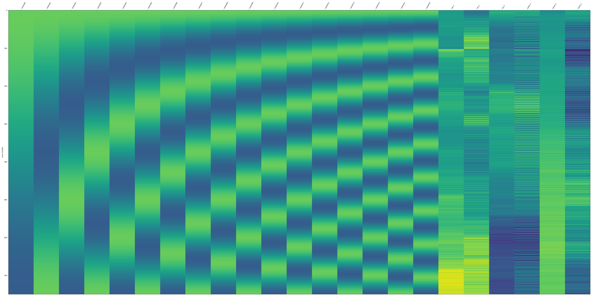
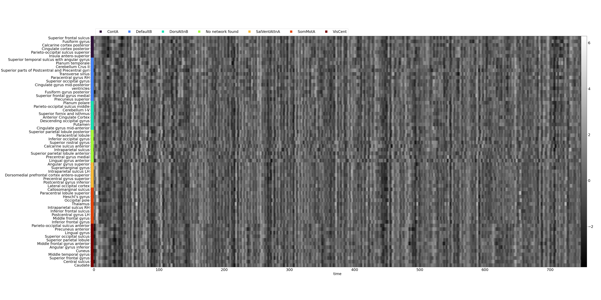
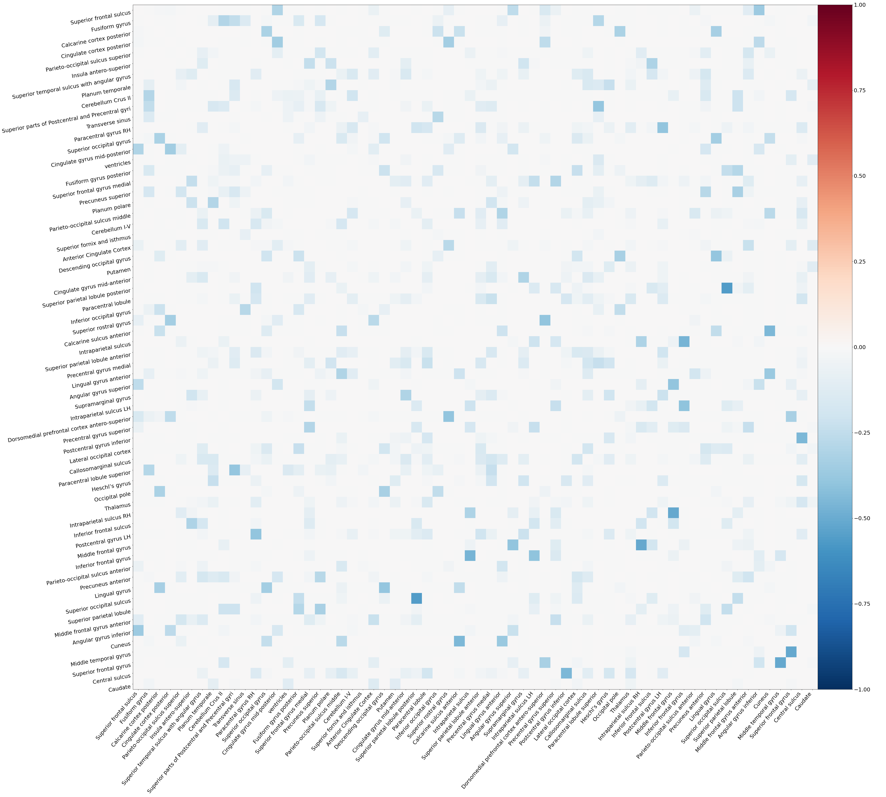

Extracting functional connectivity
Computing functional connectivity¶
First, make sure that the preprocessed fMRI data are available as derivatives in your dataset.
An example of data structure should be as follows:
├── derivatives
│ ├── fmriprep-23.1.4
│ │ ├── dataset_description.json
│ │ └── sub-pilot
│ │ ├── anat
│ │ ├── figures
│ │ └── ses-15
Then, the functional connectivity matrices can be computed using the funconn.py script.
The simplest call of the script only needs a derivative dataset (usually from fMRIPrep).
Following the above data structure, it would be called as follows:
Default call of the funconn.py script
When using the default options, the pipeline will (in this order and for all functional tasks):
- Fetch the DiFuMo atlas (64 dimensions)
- Extract the region-wise averaged timeseries
- Find high motion volumes that have framewise displacement higher than 0.4 mm or higher than 5 standardized DVAR. Then also flag as outlier the segments that are shorter than 5 timepoints.
- Interpolate high motion volumes with cubic spline interpolation
- Apply a low-pass butterworth filter (cutoff frequency of 0.15 Hz)
- Censor high motion volumes
- Remove confounds: motions (6 parameters) and discrete cosine transform basis (high-pass filtering)
- Standardize the timeseries
- Compute the functional connectivity matrices as the sparse inverse covariance (see this example, using Graphical Lasso CV of scikit-learn)
Most parameters of the pipeline can be specified in the options (see python funconn.py -h for more details).
Finally, the pipeline will save the denoised timeseries and connectivity matrices as well as various figures.
Example of figures
- Denoising confounds as a design matrix:

- Denoised timeseries as a carpet plot:

- Denoised timeseries as a signal plot:

- Functional connectivity matrix as a heatmap:

The outputs will be stored in a functional-connectivity folder in the same parent directory as the preprocessed derivatives dataset.
In the end, the data structure will look like this:
├── derivatives
│ ├── fmriprep-23.1.4
│ │ └── sub-pilot
│ │ ├── anat
│ │ ├── figures
│ │ └── ses-15
│ │ ├── anat
│ │ └── func
│ └── functional_connectivity
│ └── DiFuMo64-LP
│ └── sub-pilot
│ ├── figures
│ └── ses-15
│ └── func
QA/QC of functional connectivity¶
-
Run the
The visual report will be saved in the same directory that you passed as argument to the function.funconn_group.pyscript to generate the visual report. Following the same data structure as above, it would be called as follows: -
Open the visual report
group_report.html. The group visual report provides an overview of functional connectivity (FC) properties across the entire dataset. It includes several reportlets that summarize various aspects of FC, offering insights into the collective characteristics of the data. An example report can be found here. -
Visualize the FC distributions and apply the QA/QC criteria.
- Visualize the QC-FC distributions and apply the QA/QC criteria.
- Visualize the three plots showing QC-FC versus euclidean distance and apply the QA/QC criteria
Immediately report sessions deemed exclude, as an issue in the dataset's repository